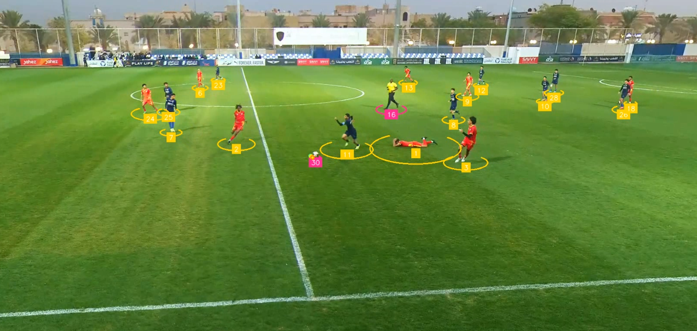
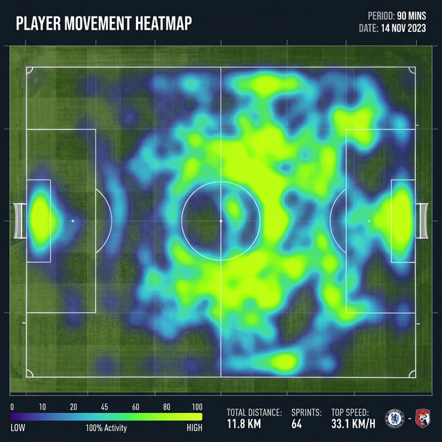
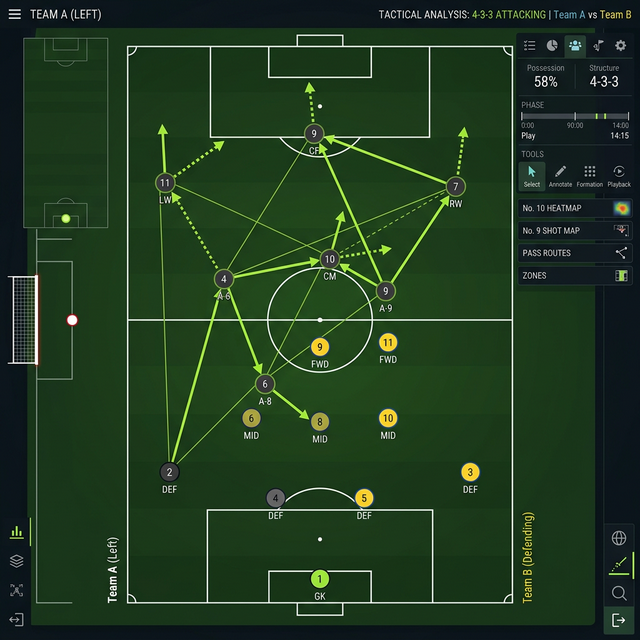

From raw footage to actionable insights — Veagle's service suite covers every layer of football analytics, tailored to your club or organization's needs.
Upload any match footage — broadcast, tactical cam, or drone — and Veagle's AI pipeline automatically processes every frame to extract comprehensive match data. No annotation, no manual tagging required.
Our CV models detect the pitch, segmenting it into zones, and simultaneously identify every player, referee, and the ball with sub-pixel precision across the entire 90 minutes.
Automatic pitch calibration maps broadcast to 2D top-down view.
Works with broadcast, tactical, or mobile camera setups.
Full match analyzed in under 30 minutes on standard GPU hardware.
JSON, CSV, and annotated video outputs for downstream use.

Veagle's tracking engine combines YOLO detection with ByteTrack and DeepSORT algorithms to maintain consistent player identities across every camera cut, zoom, and occlusion event throughout a match.
Each player receives a unique ID that persists across the game — enabling per-player statistics, heat maps, and performance reports with full traceability.
Persistent player IDs across camera switches and occlusions.
Real-time speed and distance from video, no GPS needed.
Sub-frame ball detection with trajectory and spin estimation.
Automatic team separation by jersey color via clustering.
Transform raw tracking data into deep tactical insights. Veagle generates heatmaps, passing networks, formation analysis, and physical performance metrics that coaching staffs need to prepare and review matches effectively.
All metrics are visualized in our dashboard or exported as polished coaching reports — ready for pre-match briefings and post-match reviews.
Individual and team movement density maps per match period.
Interactive visualizations of team build-up and passing tendencies.
Dynamic formation detection and shape shifts throughout the game.
Distance, sprint count, and intensity zone breakdowns per player.


Veagle's event detection engine automatically identifies key match moments — shots on goal, passes, fouls, corners, set pieces, pressing triggers, and defensive transitions — timestamped and classifed from video.
Every detected event is exported to structured reports with video clips, making it simple to review key moments without scrubbing through hours of footage.
All shots classified with location, angle, and outcome.
Corners, free kicks, and throw-ins automatically tagged.
High-press and counter-attack transitions identified by AI.
PDF and dashboard reports generated from detected events.